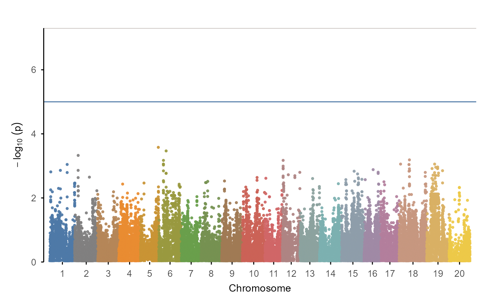
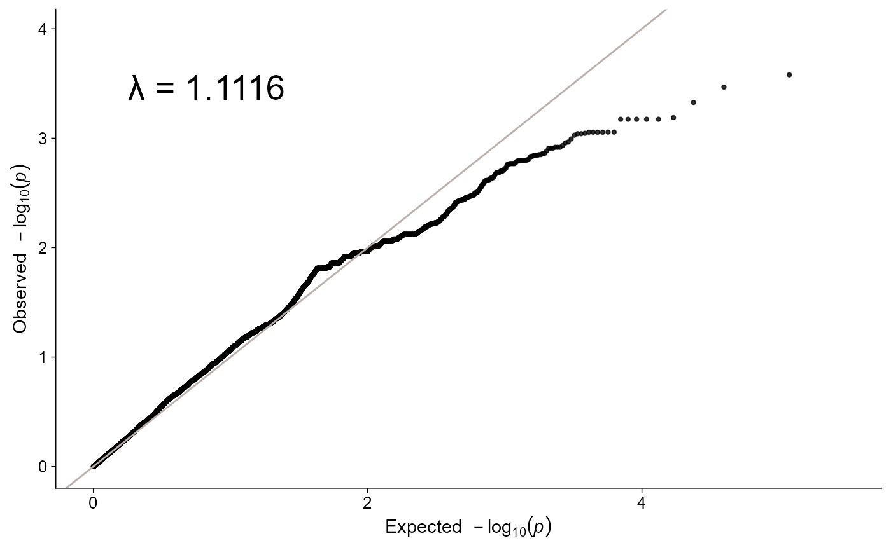
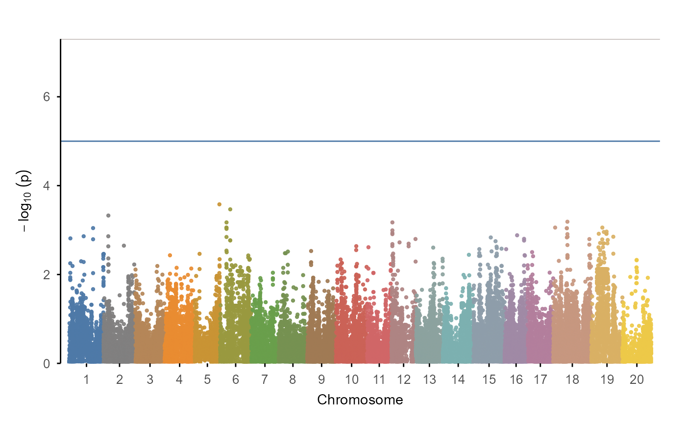
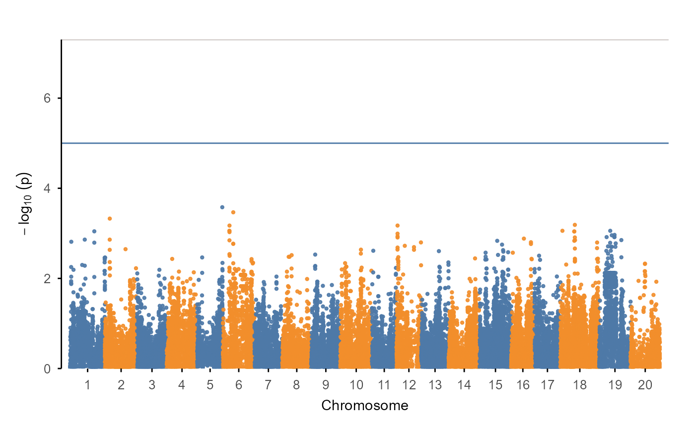

ggpop supports Manhattan and Q-Q plots from common GWAS
outputs. The intended flow is:
- import a typed object;
- plot with
plot_manha()/plot_qq()orggpop() + geom_*(); - use internal fastman-style Manhattan and Q-Q plotting behavior
without an external
fastmandependency.
API summary
| Task | Direct API | Layer API | Notes |
|---|---|---|---|
| Import GCTA/GEMMA/EMMAX | import_gwas(file, type = ...) |
- | Returns ggpop_gwas
|
| Manhattan | plot_manha() |
ggpop(data) + geom_manha() |
Defaults are aligned |
| Q-Q | plot_qq() |
ggpop(data) + ggpop::geom_qq() |
Use explicit namespace to avoid ggplot2::geom_qq()
|
| Backend | internal fastman-style layout | native ggpop stat | Direct wrappers and geoms share one implementation |
GCTA example
gwas <- import_gwas(ggpop_extdata("gwas", "gcta.mlma"), type = "gcta")
plot_manha(gwas)
plot_qq(gwas)
Layered workflow
gwas |>
ggpop() +
geom_manha()

plot_manha(gwas) and
ggpop(gwas) + geom_manha() share the same default threshold
and suggestive reference lines.
GWAS colour palettes
The GWAS module uses the same unified discrete palette entry as the
rest of ggpop. Manhattan plots default to one discrete
colour per chromosome:
plot_manha(gwas, palette = "manhattan")
For a two-colour alternating Manhattan plot, set
binary = TRUE and pass either a ggpop palette name or two
explicit colours:
plot_manha(
gwas,
palette = c("#4E79A7", "#F28E2B"),
binary = TRUE
)
Reference-line colours use the same publication palette by default,
and can be overridden explicitly with threshold_color and
suggestive_color.
Alternative GWAS formats
import_gwas() accepts type = "gcta",
type = "gemma", and type = "emmax". The
package also keeps typo-compatible aliases for old prompts and
notebooks. They are compatibility helpers, not recommended in new
code:
improt_gwas("assoc.mlma", type = "gcta")
prot_gwas("assoc.mlma", type = "gcta")GWAS plotting uses ggpop’s internal ggplot implementation in both direct and layered workflows.